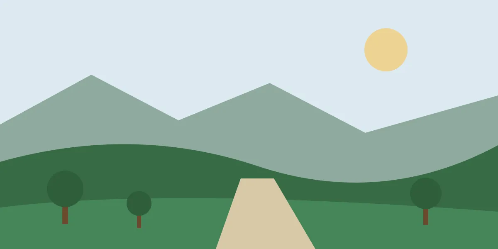

Trails within reach of Campinas
People here often drive five hours to the coast without knowing that a waterfall, a granite dome and a protected forest all sit inside an hour of the city. This site is the list I wish I had found first.
Browse the trailsWhat is on the map
Every trail below carries its distance, difficulty, walking time and climb, so the choice is made before the car leaves the garage.
Start here
If you have never walked a marked trail, these three are the gentlest in the collection. All of them are flat or nearly flat, all are under an hour and a half, and none needs special footwear.
How to read the difficulty
Easy means a flat or gently rolling path on a clear surface, under two hours, with no section where you would use your hands.
Moderate means a sustained climb, loose ground in places, and two to three hours of walking. Normal fitness is enough, but the ascent will be felt.
Hard means more than four hours, over five hundred metres of climbing, or exposed rock. These are not first hikes.
Before you go
The dry season, roughly April to September, gives firmer ground and clearer views. The rainy months make the waterfalls worth seeing and the descents worth respecting.
Several reserves near Campinas control access and close their gates in the early afternoon. Where a trail is marked as closed to dogs, it is usually because the area protects nesting birds.